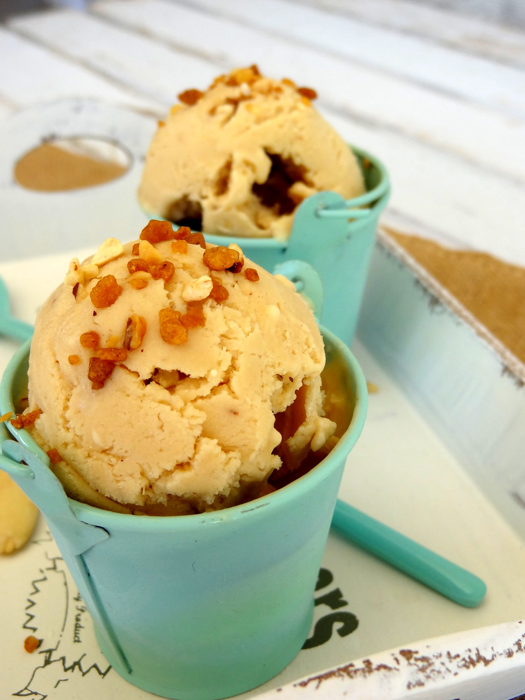
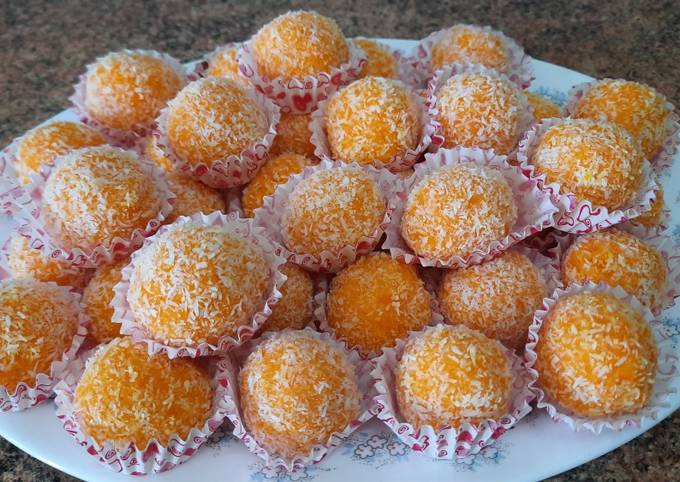

INGREDIENTES:

Ponemos la nata a calentar en un cazo; incorporamos el turrón cortado en trocitos y mezclamos con unas varillas hasta que éste se deshaga por completo. En otro bol, separamos las yemas de las claras, que hoy no vamos a usar. Batimos las yemas con la miel e incorporamos poco a poco a la mezcla de nata y turrón sin dejar de mover con las varillas. Tan sólo tenéis que tener la precaución de que la nata no hierva, para ello hacedlo con el fuego suave. Tenéis que mezclar hasta que espese, la textura debe ser como la de unas natillas. Apartamos del fuego y cuando se enfríe la mezcla, tapamos con papel film y guardamos en el frigorífico hasta que esté bien fría. Yo suelo hacerlo la noche anterior. Una vez que esta mezcla está bien fría, la ponemos en una heladera (la máquina para hacer helado) y mantecamos, tardará unos 20 o 25 minutos. ¡Y estará listo para degustar!
INGREDIENTES:

En primer lugar, precalentamos el horno a 180º C, calor arriba y abajo. Mezclamos el coco junto con el huevo batido y el azúcar hasta formar una masa. Cogemos pequeñas porciones de masa y formamos bolitas. Las vamos incorporando en pequeñas minicápsulas. Llevamos al horno durante 10 -12 minutos a 180º, calor arriba y abajo. Transcurrido el tiempo, retiramos los coquitos del horno y dejamos enfriar sobre una rejilla. Una vez fríos, espolvoreamos con azúcar glas.